| Przebieg | Koszt transportu+opłat | Czas tranzycji | Dla kogo | |
|---|---|---|---|---|
| A. Klasyk lądówka | Öresund (lub Helsingør) → DK → DE → FR przez gratisowe A75 → ES | ~62–80 € opłat + paliwo ~336 € | 5–7 dni | „prawidziwy motocamper" — Twój pierwotny plan, tania wersja |
| B. Nocny Bałtyk + Alpy + nocny prom | Trelleborg→Travemünde nocą → Alpy CH (Tremola/Furka) → Genua → GNV nocny do Barcelony | ~650–900 € (w tym prom ~150–360 €) | 4–5 dni | max skrót + alpejskie klasiki po drodze |
| C. Polferries + południe Europy | Nynäshamn→Gdańsk → CZ/AT gratis dla moto → Brenner → IT → FR/ES | ~530–600 € | 6–8 dni | tani kempingowo (PL/IT najtańsze noce) |
Moja rekomendacja: B jeśli chcesz i prom-faktor i Alpy (to ten „prawdziwy motocamper z turbo" — nocny Bałtyk, dzień w Alpach, nocny GNV i już jesteś w Barcelonie); A jeśli chcesz pełną lądówkę z widokami i najmniej ryzyka rezerwacji. C sensowny, gdy chcesz się odezwać do polskich ekip po drodze.
| Źródło | Status | Szczeble / uwaga |
|---|---|---|
| ttline.com (cenniki, rozkłady, pakiet moto) | ✅ COVERED | web_fetch→curl→Lightpanda→CDP padły na Cloudflare → Bright Data Web Unlocker OK; rozkłady z API printout |
| stenaline.se (Trelleborg→Rostock, Karlskrona→Gdynia) | ✅ | curl + oficjalne JSON timetable API; cena moto+kabina tylko w SPA GraphQL ⚠️ (proxy „od 674/999 kr") |
| polferries.com + unityline.pl/.se | ✅ | polferries.pl/.se = 403 CF → mirror .com; cennik wspólny POLSCA |
| scandlines.com (Rødby-Puttgarden, Gedser-Rostock) | ✅ | curl, oficjalne ceny „from" |
| oresundsbron.com, storebaelt.dk | ✅ | curl, oficjalne tabele 2026 |
| oresundslinjen.dk (Helsingør-Helsingborg) | ✅ | curl; ⚠️ prompt injection na stronie 404 — zignorowany, dane nie zatruwają raportu |
| brittany-ferries.co.uk / .ie | ✅ | JS-heavy → Lightpanda + wewnętrzne API „bebop"; realne ceny lato 2027 (moto+1 os.+kabina) |
| grimaldi-lines.com, gnv.it | ✅ | curl -k (problem CA) + booking wizardy SPA nie wycenione ⚠️ → avg z directferries.com (curl OK) jako proxy |
| snalltaget.se | ✅ | pełny skan sitemapy (168 URL) → potwierdzenie braku przewozu moto |
| nightjet.com, oebb.at, seat61.com, urlaubs-express.de (+PDF Sommer 2027), renfe.com | ✅ | curl/Lightpanda; ceny UEX dynamiczne ⚠️ (seat61 proxy) |
| asfinag.at, bazg.admin.ch, autostrade.it, autobrennero.it, vinci-autoroutes, aprr, leviaducdemillau.com | ✅ | oficjalne tabele/PDF-y 2026 (operatorzy drogowi) |
| Wild camping: wikipedia (4 języki), caravanya, naturstyrelsen.dk, ecrins-parcnational.fr, pyrenees-parcnational.fr, TCS, campingred | ✅ | curl/Lightpanda; ceny kempingów = MED (agregatory) |
| Fora: motor-talk.de, ukgser.com, londonbikers.com, motocykl.org, lazymotorbike.eu, blogi trip-reportowe | ✅ | curl / Discourse .json API; ~25 stron relacji |
| ADVRider | ❌ FAILED | TollBit paywall (curl + Lightpanda) — treść nieosiągalna z Pi; pokrycie zrekompensowane UKGSer/londonbikers |
| Horizons Unlimited | ❌ | Cloudflare (curl, Lightpanda, jina, proxy) — wątki namierzone przez Marginalia, treść niedostępna |
| ❌ | 403/Anubis (API, RSS, redlib) — skrypty forumowe pokryte innymi źródłami | |
| Wikimedia Commons (miniatury) | ⚠️ 32/36 | 4 pliki poza zasięgiem (blokady CDN) → zamienione na odpowiedniki tematyczne z API Commons |
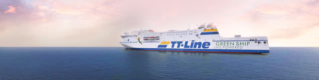
Nocne rejsy: Travemünde 21:30→07:30 (8h), Rostock 23:30→05:30 (6h). Ceny „od" (auto+1, lato): Travemünde 106–116 €, Rostock 108–128 €, Świnoujście od 95 €; moto zwykle taniej.
Pakiet dla motocyklistów: return w 1 rezerwacji = −10% bilet, −10% kajuta, −20% posiłki, 1–2 os. od 47 €/os. (powrót, Travemünde/Rostock). Max 2 moto/rezerwację. Źródło HIGH
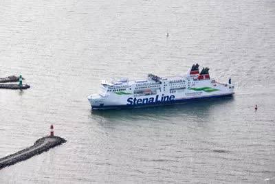
Trelleborg-Rostock ~6h, 3 odpł./dzień (nocny 22:55→06:10), auto „od 674 kr". Karlskrona-Gdynia ~10-12h (nocne), „od 999 kr", −25% na powrót przy round trip (dotyczy też moto), śniadanie w kabinie w cenie. Dokładna cena moto+kajuta wymaga booking flow (GraphQL) — ⚠️ proxy. Źródło MED
Nynäshamn→Gdańsk moto 360/420/500 PLN (low/mid/high), Ystad/Świnoujście 240/290/360 PLN, Gdańsk-Karlshamn 300/430 PLN; pasażer +85–190 PLN; kajuta/posiłki osobno. Źródło HIGH
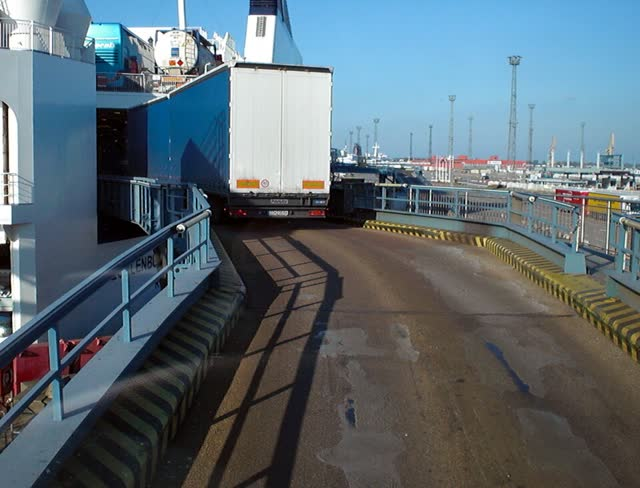
Rødby→Puttgarden 45 min: moto od 31,70 € (1-day return od 57 €), bilecik obejmuje moto + 3 osoby.
Gedser→Rostock 2h: moto od 43,50 €; zastępuje ~700-900 km objazdu przez Jutlandię (~5-6h). Combo z Øresund: od 61,25 €. Źródło HIGH
Öresund moto: 94 DKK (ØresundGO) / 215 DKK online / 240 DKK bramka. Storebælt moto ≤3 m: 109/125 DKK (Brobizz nie dla moto — karta na bramce).
Helsingør→Helsingborg: 119–129 DKK wysoki sezon, co 20 min, ~20 min — realna oszczędność vs most, jeśli jedziesz dalej promem na DE. Źródło HIGH
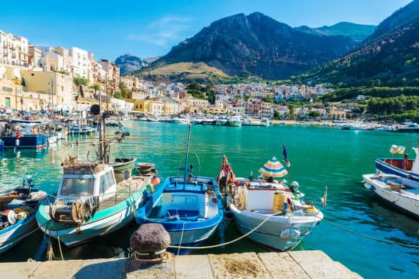
~21,5h (fastest 17,5h), 2 rejsy/tyg (latem więcej), odpływ popołudnie/wieczór → Barcelona wczesne popołudnie następnego dnia. Moto avg ~$359, kajuta avg ~$459 MED (proxy DirectFerries); oficjalne „from €71" (foot-podstawa). Rezerwacje 2027 otwarte. gnv.it
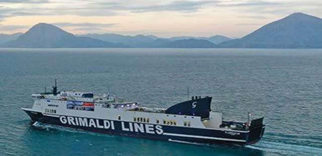
~23h nocny, 4 rejsy/tyg, flagowce Cruise Roma/Barcelona. Moto avg ~$199, kajuta avg ~$316. Dla Ciebie geograficznie gorsza (Rzym = +500 km vs Genua), ale najlepszy VFM jak już jesteś w środkowych Włoszech. Część rejsów codeshare z Trasmed. Źródło MED
❌ Savona→Barcelona (zlikwidowana) · ❌ GNV Palermo→Barcelona · ❌ GNV Civitavecchia→Barcelona · ❌ Balearia/Trasmed kontynent→kontynent z Włoch. Porto Torres (Sardynia)→Barcelona: jest (Grimaldi, moto avg ~$111, ~15h) — tylko jak chcesz Sardynię wpisać w plan. HIGH
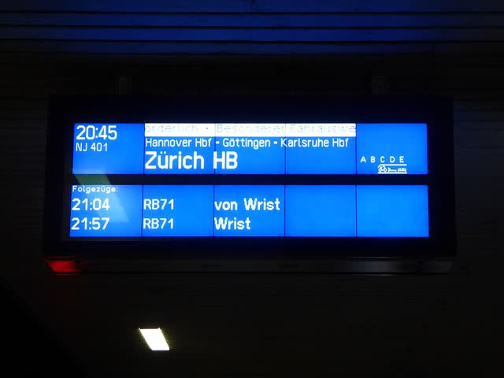
Sezon letni maj–październik, ~2 odpł./tydz. na relację: Hamburg-Altona↔Monachium, Hamburg↔Villach, Hamburg↔Lörrach, Düsseldorf↔Villach. Check-in 120 min przed odjazdem, moto online do 205×190 cm (z i bez sidecara), ubezpieczenie pojazdu od 18 €/kierunek. Lato 2027: podwójna pula miejsc moto podczas European Bike Week (Faaker See, 7–12.09). Ceny dynamiczne ⚠️ (seat61: auto+2 os. ~460 €+ off-peak; moto realnie mniej — LOW). Źródło + PDF HIGH
Nightjet ÖBB: wagony na pojazdy tylko wewnątrz Austrii (Wien/Graz/Villach/Feldkirch) — trasy Hamburg/Basel→Roma/Milano NIE wożą moto. Snälltåget: zero moto (rower tylko, limit bagażu 80×50×35). Do Hiszpanii koleją z moto = brak (Renfe Trenhotel dead 2020, SNCF Auto-Train dead 2019). Tauern Autoschleuse (Mallnitz↔Böckstein, moto €26): ⚠️ zamknięta II–VII 2027 (modernizacja).
| Kraj/obiekt | Moto płaci | Kwoty | Uwagi |
|---|---|---|---|
| 🇸🇪→🇩🇰 Öresundbron | tak | 215 DKK online / 240 bramka | ØresundGO 94 DKK tylko przy częstych przejazdach (opłata roczna 370 DKK) |
| 🇩🇰 Storebælt | tak | 109 DKK ekspres / 125 DKK karta | rabaty round-trip tylko z umową Private |
| 🇩🇪 Niemcy | 0 € | — | autostrady gratis; B-roads gratis i ładniejsze |
| 🇨🇿 Czechy | 0 € | — | moto zwolnione z e-winiety |
| 🇦🇹 Austria | tak (winieta + odcinki) | 1 dzień 3,80 € / 10 dni 5,10 € | odcinki jak auto: Brenner 12,50 €, Tauern 15 €, Karawanken 9 €, Arlberg 13 € |
| 🇨🇭 Szwajcaria | tak (roczna) | CHF 40 | brak winiety krótkiej — tranzyt zawsze kosztuje pełne 40; przełęcze gratis, Gotthard-tunel w winiecie |
| 🇮🇹 Włochy | tak (klasa A = jak auto) | Milano→Genua ≈ 11,30 € · Bolzano→Modena ≈ 16,50 € | ~0,079 €/km; Aurelia SS1 jako darmowa alternatywa nadmorska |
| 🇫🇷 Francja | tak (Classe 5 ≈ 56% auta) | Lyon→granica ES 32,80 € · Montpellier→Perthus 13,00 € · Dijon→Lyon 7,50 € | A75 gratis (Millau 6,80 € / 0 € przez miasto); telepéage badge można ustawić na klasę 5 |
| 🇪🇸 Hiszpania | prawie 0 | AP-7 Katalonia GRATIS od 2021 | płatne tylko wyjątki: AP-6, AP-9, fragmenty AP-7 południe; autovías A-x zawsze gratis |
| 🇵🇱 Polska (wariant C) | częściowo | A4/A2 ≈ 50% stawki auta (~10 € tranzyt) | e-TOLL nie dotyczy moto |
Źródła: oresundsbron.com, storebaelt.dk, asfinag.at, bazg.admin.ch, autostrade.it/autobrennero.it, vinci-autoroutes/aprr PDF, leviaducdemillau.com, edalnice.gov.cz — wszystkie HIGH (oficjalne tabele 2026; 2027 zwykle +1-3%).
Öresund online 215 DKK ≈ 29 € (albo Helsingør prom ≈ 17 €) · Scandlines Rødby→Puttgarden 31,70 € · DE 0 · A75 0 € (Millau 6,80 € lub 0 €) · A9 Montpellier→Le Perthus 13 € · ES 0 → opłaty ≈ 62–80 €.
Dystans ~3 300 km · paliwo (5,5 l/100 km × 1,85 €/l — parametry widoczne, przelicz na swoje moto) ≈ 336 € · noclegi 5-7 (kemping/bivouac) ≈ 90–160 € → razem ≈ 540–620 €.
+ pełna kontrola, najlepsze widoki na własnych kołach, zero ryzyka rezerwacji promowych − najdłuższy czas
TT-Line Trelleborg→Travemünde nocny ~50–110 € (moto zwykle < auto; pakiet −10%) · DE 0 · CH winieta 43 € + przełęcze 0 · IT Milano→Genua 11,30 € · GNV Genoa→Barcelona moto+kabina ≈ 150–360 € (avg $359 ⚠️ MED) → transport ≈ 260–520 €.
Jazda ~2 200 km ≈ 225 € paliwa + 3-4 noce kemping ≈ 60-100 € → razem ≈ 650–900 €.
+ oszczędzasz ~1 200 km i ~1,5 dnia; Alpy gratis − koszt promu, ryzyko wiatrów/przełożenia rejsu
Nynäshamn→Gdańsk moto 360–500 PLN ≈ 84–116 € (+kajuta) · PL ~10 € · CZ 0 · AT 5,10 € + Brenner 12,50 € · IT ~25-30 € · dalej jak A (A75+A9 ~20 €) → opłaty ≈ 155–200 € + paliwo ~370-400 € (3 600-3 900 km) + tanie kempingi PL/IT → razem ≈ 530–600 €.
+ tańsze noce na kempingach (PL 10-15 €), prom nocą oszczędza hotel − dłuższy dystans, Brenner płatny i nudny vs przełęcze
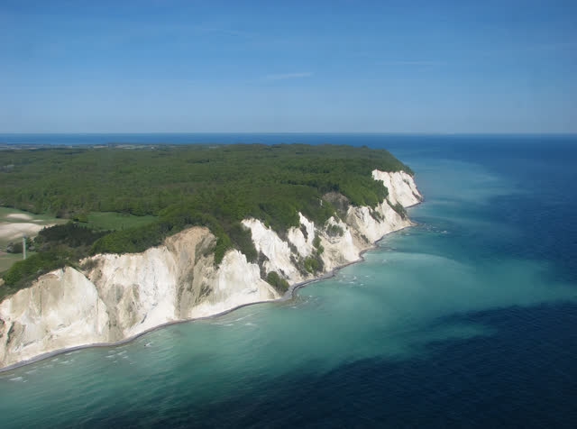
6 km białych kredowych klifów (do 128 m), UNESCO od 2025. Leży prawie na korytarzu E47 do promu Rødby: detour +40–70 km / +45–70 min (primærrute 287 przez Stege). Najlepszy pojedynczy widok przyrodniczy DK na tej trasie. wiki
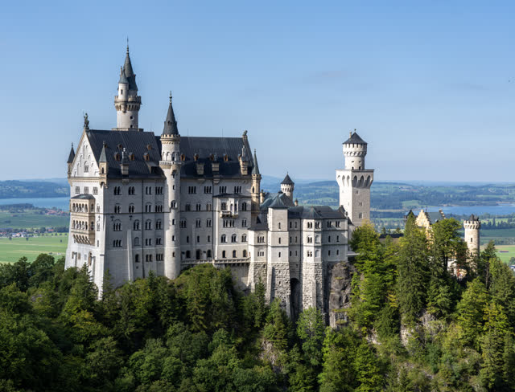
Bajkowy zamek Ludwika II. A7 kończy się praktycznie w Füssen — detour +20–40 min. Parking moto przy Hohenschwangau; najlepsze foto z Marienbrücke. Idealny przystanek w wariancie centralnym (DE→AT/CH). oficjalna
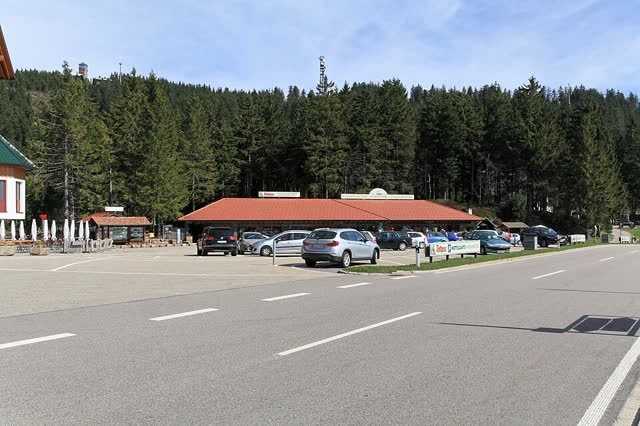
60 km grzbietem na 800–1000 m (Mummelsee, Hornisgrinde) + B31 nad Titisee. Detour vs A5 +1,5–2,5 h. Tylko jeśli celujesz w Strasbourg/Bazylea → FR. źródło
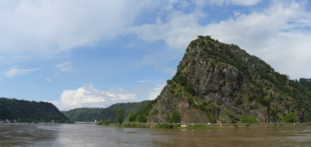
Rhine Gorge (UNESCO, zamki, winnice) i Cochem→Trier. Klasa jazdy moto średnia (dolina), detour +1,5–3 h. Dla wariantu zachodniego przez Ren. wiki
Rügen/Königsstuhl — ten sam widok klifów co Møns Klint, ale +2–3 h w bok. Königssee/Berchtesgaden — piękne, ale najbardziej wschodni cypel Alp (+1,5–2,5 h, cofasz się na wschód gdy cel = Genua). Sydfynske Øhav — nizinni, bez „wow", tylko przy wariancie E20. SKIP w tranzycie
484 km Lindau→Königssee: jeziora, Oberjoch (106 zakrętów). Odcinek Lindau→Füssen ≈ bez nadkładu vs A96 — bierz go zamiast autostrady w wariancie zachodnim. oficjalna WARTO (fragment)
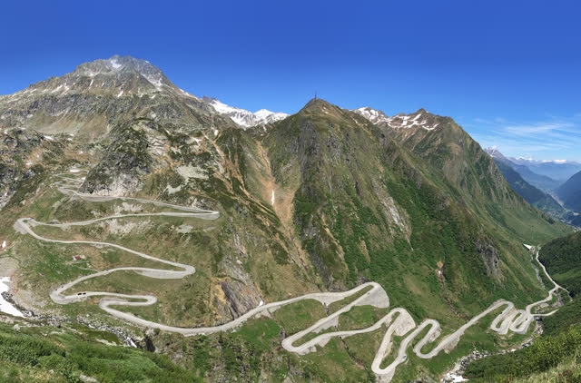
Brukowana serpentyna z 1827-30 (24 zakręty od strony Ticino), 2106 m. Sezon maj–paź. Zamiast tunelu = +20-30 min, ale to jest cel. wiki
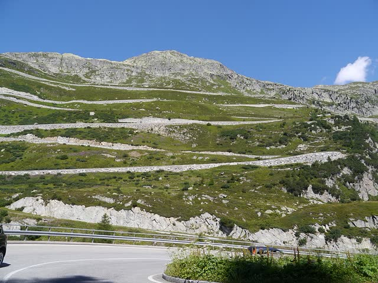
Furka 2429 m = pościg z Goldfingera przy Hotel Belvédère; Grimsel 2163 m — granit, zapory, wodospady. Pętla +1,5–2 h vs dolina. Sezon VI–X. wiki
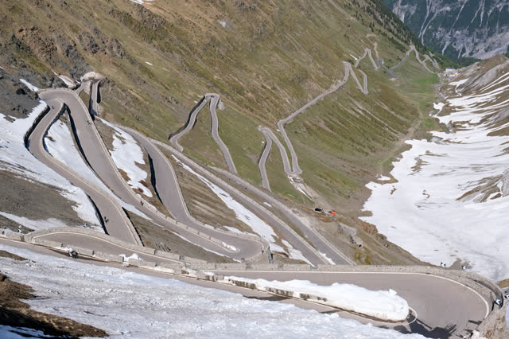
2224 m, jedna z najładniejszych motocyklowych dróg CH (26 mostów/tuneli, Steingletscher). Otwiera się najpóźniej (~czerwiec). wiki
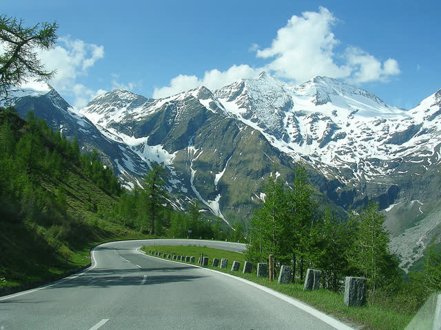
Hochtor 2504 m, 36 zakrętów, widok na najwyższą górę AT. Moto Tageskarte €36 (auto 46 €), Tour-Ticket (GG+Gerlos+Nockalm) €55. Otwarte V–XI. Detour +2–3 h od korytarza Salzburg–Villach. oficjalna
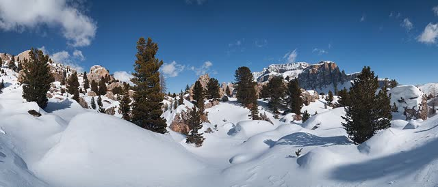
Pordoi–Sella–Gardena–Campolongo, dramatyczne ściany. Detour z Brenner→Genua +100–150 km / +2–3 h — najtaniej „dokupione" alpejskie krajobrazy w wariancie wschodnim. Sezon VI–IX pewny. wiki
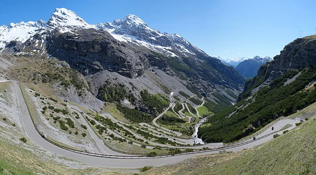
2757 m, 48 serpentyn, legenda (Top Gear). Z korytarza do Genui: +250–300 km / +5–6 h — tylko jako osobny dzień. Pewne VI–IX; pod koniec VIII jeden dzień zamknięta (wyścig rowerowy). wiki
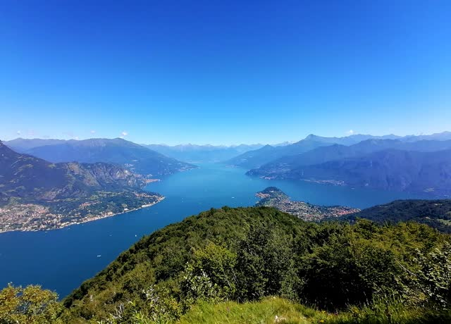
Bellagio, Gardesana — +30–60 km od korytarza Milano–Genua. Tani „ah moment" po dniu autostrad. wiki
Silvretta Hochalpenstrasse: ZAMKNIĘTA do ~2030 (osunięcia 2025, budowa 2027-29) — nie planuj. Brenner A13: 12,50 € dla moto, autostrada nudna — alternatywa Jaufenpass (gratis). Timtelsjoch ~18 € moto, nocą zamykany. Tauern Autoschleuse zamknięta II–VII 2027. źródło
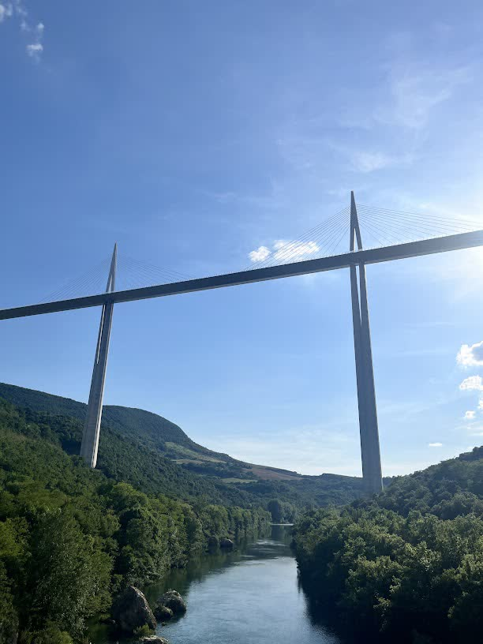
335 km autostrady za 0 € (Clermont-Ferrand→Béziers). Viadukt Millau (343 m — wyższy od wieży Eiffla): moto Classe 5 6,80 €, objazd przez miasto D809 = 0 €. Po drodze viadukt Garabit (Eiffel 1884) i płaskowyż Larzac. taryfy oficjalne
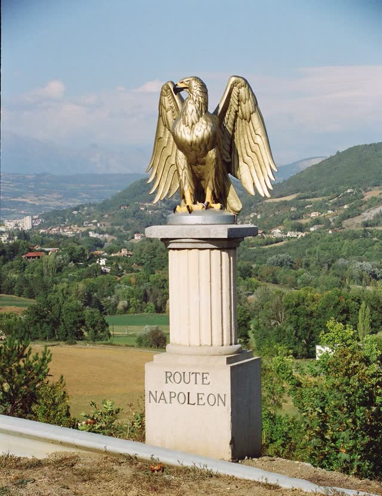
~325 km Grenoble→Cannes: serpentyny, wąwozy, lawenda, pozłacane orły Napoleona co kilkaset metrów. Gratis. Sensowny w wariancie alpejskim; w wariancie A75 = duży objazd wschodni. wiki
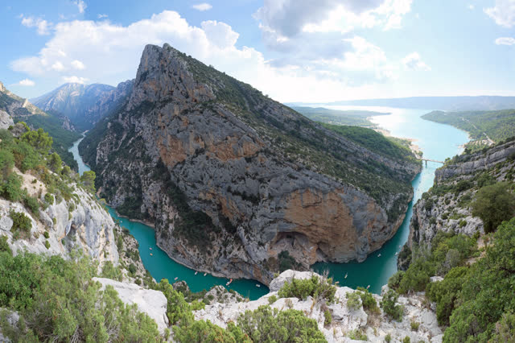
„Grand Canyon Francji": 25 km wąwozu, do 700 m głębokości, turkusowa woda. Północ D952 / południe Corniche Sublime D71. Od A8/A9 to +150–250 km — planuj jako pół dnia minimum. Gratis. wiki
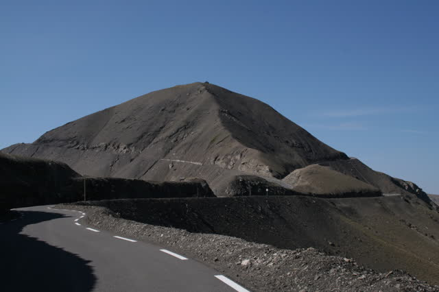
Najwyżej położona asfaltowa pętla Europy (Cime de la Bonette 2802 m). Otwarta VI–X; w lipcu/sierpniu pewna. Element Route des Grandes Alpes. wiki
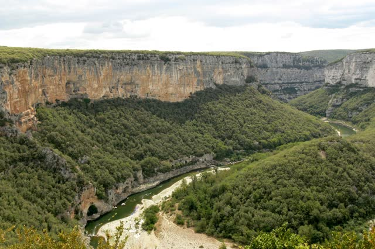
30 km wąwozu + naturalny łuk Pont d'Arc; krawędź D290. Z A7/A75 tylko +40–90 km — łatwe „popołudnie" w wariancie centralnym. wiki
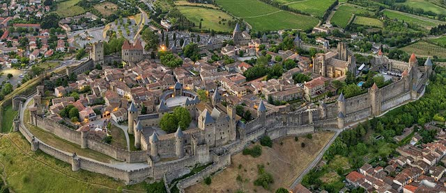
Największa ufortyfikowana Cité Europy (3 km murów, 52 wieże, UNESCO), tuż przy A61. Dalszy bonus: zamki katarskie Peyrepertuse/Quéribus (+40–80 km świetnej D14). wiki
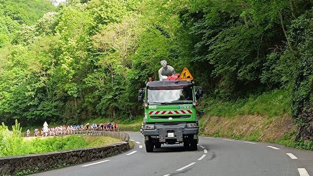
Klasyki TdF: Tourmalet 2115 m (najwyższy asfalt Pirenejów FR), D918. Pętla +1,5–3 h z A64. Zejście do Hiszpanii przez Somport (tunel gratis od 2021) zamiast płatnej A63. wiki
Perpignan→Prades→Mont-Louis→Puigcerdà (ES) zamiast płatnej A9: +1–1,5 h, drogi Vaubana (UNESCO), gratis. A9 moto (Montpellier→Perthus) = 13 €. wiki
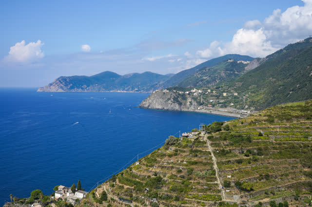
Droga panoramiczna nad wioskami (UNESCO). Samych wiosek nie dojedziesz moto — zostaw moto na płatnym parkingu, dalej pociąg/szlak (Cinque Terre Card 7,50-19,50 €). VII-VIII = apokalipsa turystyczna. wikivoyage
Rekomendacja agenta: nocleg w Camogli (25 km od portu, klimat, tańsze parkowanie) albo w samej Genui dla wygody check-in na prom. Portofino = nie jako baza (kosmiczne ceny, zero parkingu; moto zostaw w Santa Margherita). wiki
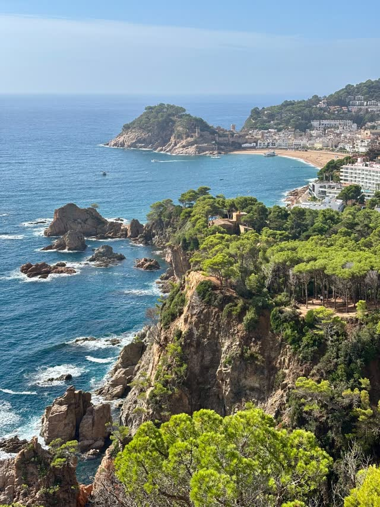
21,3 km, ~365 zakrętów nad klifami, „European Monument". Start w Tossa de Mar (nie Blanes — dojazd do Tossa osobno). Stopuj tylko na belwederach — brak poboczy. dangerousroads
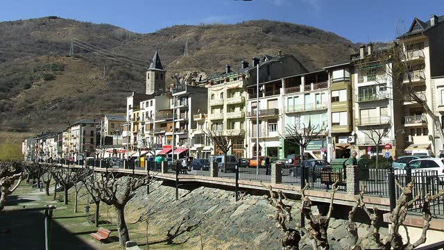
Trans-Pireneje: Portbou→Figueres→Ripoll→Puigcerdà→Sort→Aínsa→Jaca. Regularnie top-10 dróg moto Hiszpanii, „as good as the Alps" (londonbikers). Esencja: Sort→La Pobla i Aínsa→Sabiñánigo. Sezon V–X. wiki
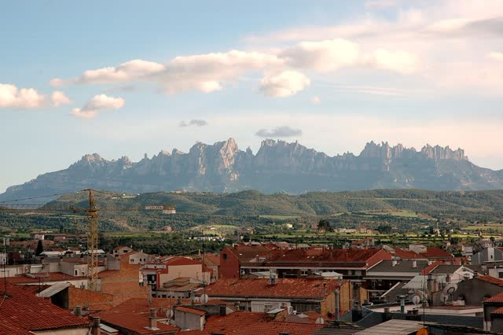
Klasztor na 1236 m; wspinaczka 8,5 km / 588 m przewyższenia z Monistrol (średnio 6,9%). Parking płatny przy sanktuarium; uwaga na autokary. źródło
Sagrada Família 26–40 € (rezerwacja online obowiązkowa), Park Güell 10–18 €. Parking moto = problem (3 €/h, 20–36 €/dzień) — zostaw moto w strzeżonym garażu; jazda po centrum niezalecana (wąskie, ZBE strefy). oficjalna
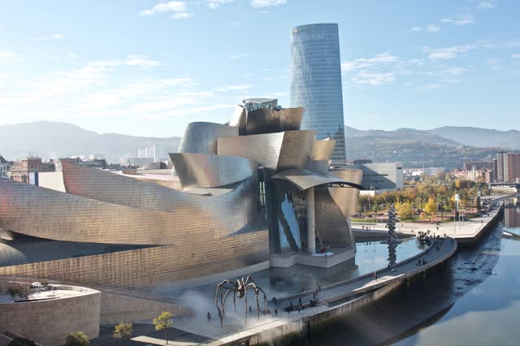
Guggenheim (~20 €), pintxos w Donostii, klify flysch Zumaia (GEOPARK, plener GoT). Pętla ~130 km; AP-8 płatna → BI-634 gratis nad morzem. wiki
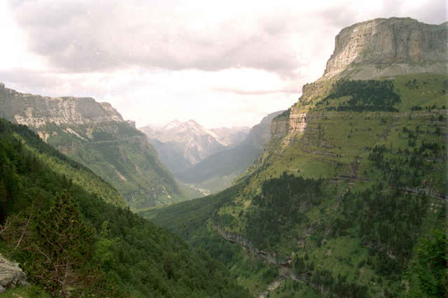
Lodowcowa dolina UNESCO; dojazd A-135 do Torla (bus w sezonie ~5-6 €). ⚠️ Mirador del Valle = szutry 4×4 — nie dla moto turystycznego. wiki
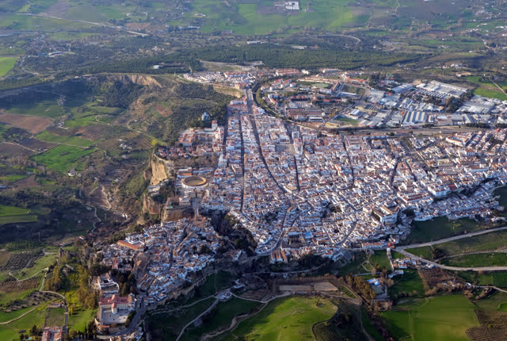
Most 98 m nad wąwozem El Tajo (Hemingway). Najlepsze foto ze ścieżki poniżej (Mirador). Baza pod Pueblos Blancos. wiki
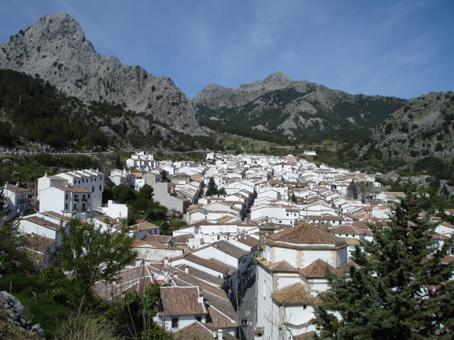
Grazalema→Zahara de la Sierra→Ubrique→El Bosque, 80–120 km białych wiosek na górach. Najlepiej III–VI i IX–XI. wiki
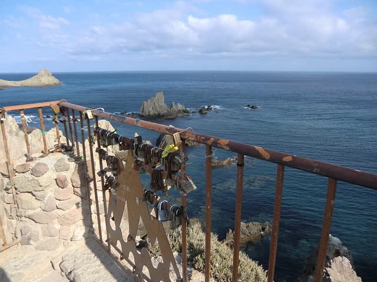
Jedyna „gorąca pustynia" Europy: wulkaniczne klify, puste plaże (Mónsul, Genoveses), plenery westernów Leone. Costa del Sol = tylko przejazd; tu zostań 2 dni. ⚠️ VI–VIII piekło. wiki
A-395 na Pico Veleta: droga zamknięta dla ruchu powyżej Hoya de la Mora (~2600 m) od 1999 — „najwyżej asfaltowa droga Europy" dla moto realnie kończy się na barierze. Jazda do Hoya de la Mora: super asfalt, widoki. źródło
Kładka nad wąwozem Gaitanes (~10 €, rezerwacja obowiązkowa, wyprzedaje się). Moto zostaje na parkingu w El Chorro. Detour ~45-60 min od trasy. oficjalna
| Kraj | Wild camp | Kemping moto+namiot | Praktyka |
|---|---|---|---|
| 🇸🇪 Szwecja | LEGALNE (allemansrätten, 1 noc) | 150–350 SEK | ⚠️ prawo formalnie nie obejmuje pojazdów — moto na poboczu/parkingu, namiot pieszo |
| 🇩🇰 Dania | zakaz (kary 5–500 €) | 120–200 DKK | legalne: „fri teltning" + primitiv overnatningsplads (grunty państwowe, 1-2 noce, bez pojazdów) — udinaturen.dk |
| 🇩🇪 Niemcy | zakaz (50–5000 € wg landu) | 12–25 € | wyjątki: Brandenburgia/M-V/SH (1 noc, pieszo); Trekkingplätze; realnie: kempingi ADAC/camping.info |
| 🇨🇭 Szwajcaria | warunkowo TAK (bivouac nad granicą lasu, 1-2 noce) | 20–35 CHF | zakaz: Szwajcarski PN, rezerwaty; reguły kantonalne |
| 🇦🇹 Austria | zakaz (5–500 €, PN do 14 500 €) | 15–25 € | Notbiwak legalny wszędzie; za zgodą właściciela OK |
| 🇮🇹 Włochy | zakaz (100–500 €) | 15–25 € (agri-camping) | agriturismo = dobry plan; nocleg „w celu odzyskania zdolności jazdy" tolerowany (bez rozkładania) |
| 🇫🇷 Francja | camping sauvage zakazany, ale bivouac w górach OK | 10–20 € (aire naturelle / à la ferme) | Parki (Écrins, Pyrénées): bivouac 19:00–9:00, >1h marszu od drogi; zakaz całkowity: Verdon PN, Calanques, Ardèche PN |
| 🇪🇸 Hiszpania | formalnie zakaz, tolerowany w głębi (30–800 €) | 10–20 € (Campingred 21–27 €) | plaża = tabu; śródziemnomorskie wybrzeże kontrolowane surowo; nocleg „awaryjny" bez rozkładania = OK |
Źródła: naturstyrelsen.dk, ecrins/pyrenees-parcnational.fr (oficjalne regulaminy bivouac), wikipedia DE/FR/IT/ES, caravanya.com HIGH prawo / MED ceny.
🇫🇷 Francja: rękawice obowiązkowe (CE), kamizelka odblaskowa w zasięgu ręki, limit 80 km/h na single-carriageway, Crit'Air ~4 € online (certificat-air.gouv.fr) — potrzebna do stref: Lyon, Grenoble (masz je na trasie A6/A48!), zamów przed wyjazdem. Toll-y: moto = Classe 5, unikaj bramek z ograniczeniem wysokości.
🇪🇸 Hiszpania: słuchawki z muzyką zakazane (~200 €; zatyczki i interkom OK), kamizelka odblaskowa do założenia po zsiadaniu na interurban (regula od 10.2026 — weryfikuj u DGT), lane-splitting tylko gdzie znaki pozwalają (bałagan legislacyjny 2026), policja robi alkomaty całym grupom. Mandaty płatne na miejscu — kolega z forum „frogmarched to the cashpoint".
🎒 Pakowanie (nicolasbouliane, 32 000 km doświadczenia): wszystko mieści się w 2 kufrach 45 l; materac (Klymit Static V typ), adapter 12V→USB-C (GPS drainuje telefon), tankbag na kosztowności + mapa w wodoodpornej kieszeni, plecak tylko na lekkie rzeczy.
Optimum: druga połowa czerwca – wrzesień. Susten/Bonette/Stelvio/Galibier pewnie otwarte od poł. czerwca; w maju bywają zamknięte. Lipiec/sierpień = pełna sezonowość + najwięcej ludzi (Alpy, Verdon, Cinque Terre, wybrzeże) i upał na południu ES. Wrzesień = sweet spot (Perpignan ~30 °C, mniej tłumów, morze ciepłe). Przełęcze Pirenejów i Alp zaczynają zamykać od października.
Uwaga 2027: Tauern Autoschleuse zamknięta II–VII 2027 (nie planuj przekładki); Silvretta zamknięta w ogóle; UEX Innsbruck terminal wyłączony w lecie 2027 (roboty) — załadunek Hamburg/Düsseldorf/München/Lörrach/Villach tylko.